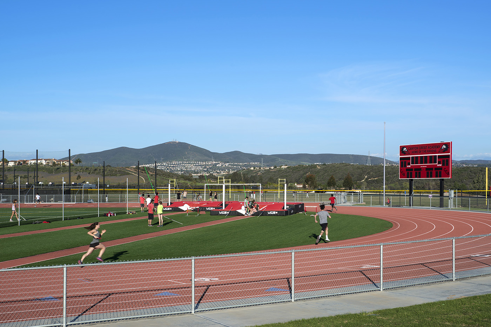

Bryan Huang
An athletic scientist with a love for nature
Environment
As a child, my fondest memories involved peering through trees and climbing lichenous rocks. Over time, I developed a deep appreciation for the environment and a desire to protect it through sustainable contributions. In middle school, I joined a non-profit called Teens Against E-Waste (TAE) to help reduce E-waste and organized a successful battery drive. I eventually acquired a leadership position in both TAE and a computer distribution/refurbishing organization. I am interested in finding a way to utilize scientific knowledge to help maintain the natural beauty of the world.
Athletics

In order to become more physically fit, I have pursued many forms of sports. As a student athlete, I have built strong camaraderie with my cross-country and track and field teams. Over the years I have experimented with multiple track events until I decided to focus on pole vaulting and triple jumping. Along the way, I also developed an interest in calisthenics. I am working towards perfecting muscle ups, handstands, and front levers. I would also like to improve my climbing skills in the future.
Science
I have always been curious about how the world worked. The world maintains itself with incredible cohesion, and I find that the experience of finding driving factors behind each process is very fascinating. Inspired by my father and my brother, I started my scientific journey through an exploration of physics (particularly astronomy) in elementary school. Later on, I would steadily gain interest in aspects of engineering, biology, and finally materials science, though my interest in physics never diminished. I have honed my interests with many programs, like OPALS, over the years.